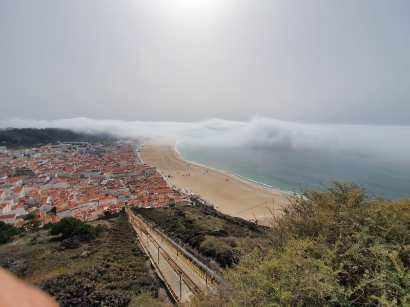
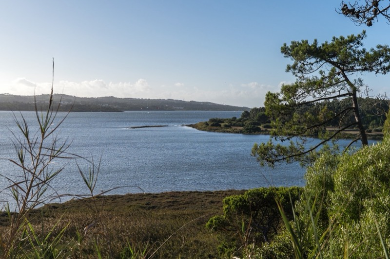
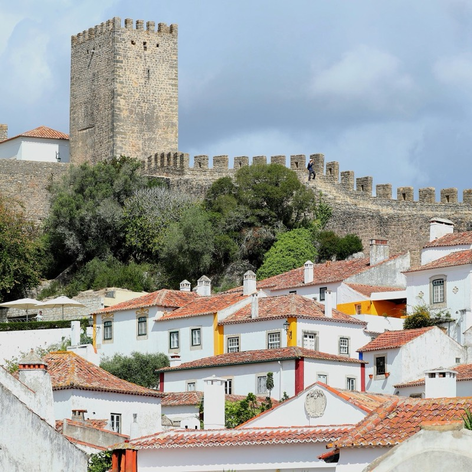
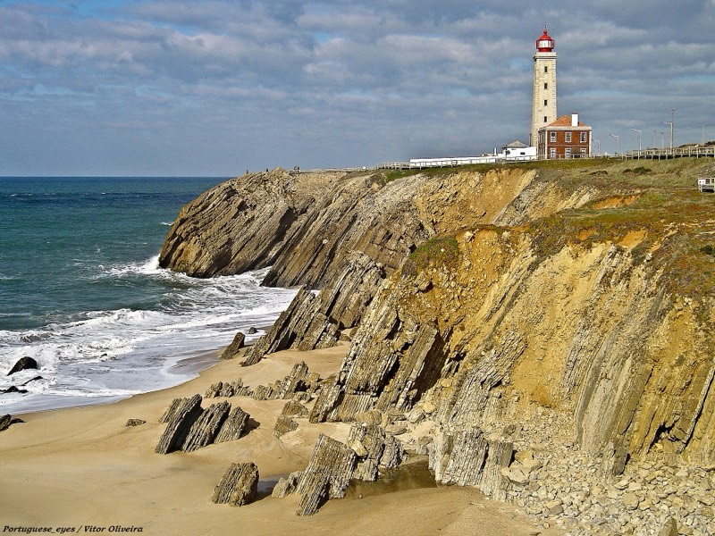
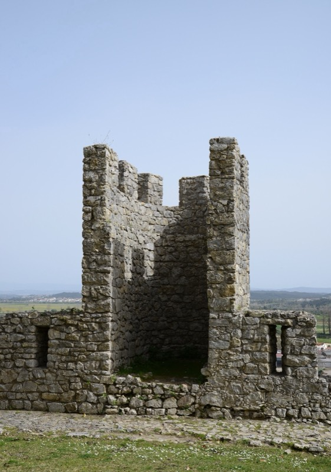
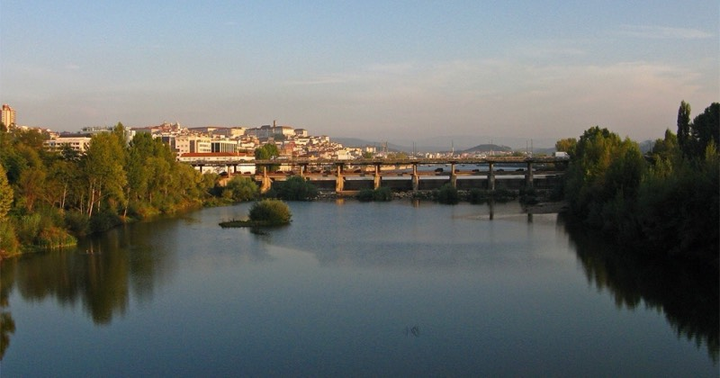

Единственный маршрут с заброской машиной, и этим он ценен: из Лиссабона нет поезда с велосипедом ни в Обидуш, ни в Калдаш. Дальше всё линейно на север: лагуна Обидуша, Назаре, 60 км бетонной велодорожки сквозь сосняк Лейрии, эстуарий Мондегу и финиш в Коимбре, откуда Intercidades везёт домой.
Первый день самый горбатый: холмы Серра-ду-Бору между Фош-ду-Арелью и Сан-Мартинью и подъём на Ситиу в Назаре. Если выезд из Лиссабона ранний, можно добить до Сан-Педру-де-Моэл (São Pedro de Moel), но там в ноябре с жильём хуже, чем в Назаре, поэтому базовый план ночует в Назаре.
Второй день ровный и быстрый: EuroVelo 1 здесь идёт по велодорожке Estrada Atlântica, на 87 % твёрдой (бетон и асфальт), с одной прямой через Mata Nacional de Leiria на десятки километров. После Педрогана лес сменяется дюнами и солеварнями у устья Мондегу.
Третий день по дамбам Байшу-Мондегу: самый накатанный плоский гравий в выборке по тепловой карте Strava, но дорога вдоль канала после Фигейры вся в ямах, а вид местами закрывает дамба. В Монтемор стоит заехать ради замка, в Коимбре финиш у Шупала (Mata Nacional do Choupal).
По дням
| День | Откуда → куда | км | набор | Покрытие, заметки |
|---|---|---|---|---|
| Пт 6.11 | Óbidos → Foz do Arelho → São Martinho do Porto → Nazaré | ~40 км | ~550 м | асфальт и гравий у лагуны; подъёмы Serra do Bouro; EV1 секция 19 по GPX ~520 м |
| Сб 7.11 | Nazaré → São Pedro de Moel → Praia da Vieira → Pedrógão → Figueira da Foz | 81 км | ~430 м | велодорожка Estrada Atlântica, бетон и асфальт 87 %; Komoot-тур 2025: 104 км / 590 м с заездами |
| Вс 8.11 | Figueira da Foz → Montemor-o-Velho → Coimbra | 43–55 км | ~130 м | дамбы Мондегу: асфальт с ямами и ~25–50 % грунта; ж/д мост не пересечь |
- Серра-ду-Бору (Serra do Bouro) между Foz do Arelho и São Martinho: короткие, но крутые холмы, набор дня в основном здесь.
- Подъём на Ситиу в Назаре: фуникулёр возит велосипеды, но с сентября 2025 его закрывали, проверить на месте; объезд по дороге.
- Сосняк Лейрии: шторм Kristin в январе 2026 повалил около 100 тыс. м³ леса; главные дороги и велодорожка расчищены, второстепенные просеки могут быть завалены. Держаться Estrada Atlântica.
- Мондегу: дорога вдоль канала после Фигейры «постоянный слалом между ямами» (Komoot), участок 150 м с запретом езды (вести), железнодорожный мост через реку на велосипеде не пересечь, нужен длинный объезд. Северный ветер в лицо на дамбах.
- Глубокого песка на нитке нет ни по одному источнику; песчаные тропы только в стороне, к пляжам.
Что смотреть
- Обидуш (Óbidos): стены замка и улица Direita до старта, 6 км до лагуны.
- Лагуна Обидуша (Lagoa de Óbidos): гравийная тропа по южному берегу, мирадор Atlântico над Foz do Arelho.
- Сан-Мартинью-ду-Порту: круглая бухта-ракушка, вид с дороги на Salir do Porto.
- Назаре: Ситиу, мирадор Суберку, форт Сан-Мигел с музеем больших волн; в ноябре сезон свеллов.
- Пенеду-да-Саудаде: маяк на утёсе у São Pedro de Moel.
- Mata Nacional de Leiria: сосняк XIII века, посаженный от дюн; лагуна Ervedeira с кафе на км 57 тура.
- Эстуарий Мондегу: солеварни, рис, остров Morraceira, монастырь Seiça, приливная мельница у Alqueidão.
- Монтемор-у-Велью: замок над долиной, лучший обзор на Байшу-Мондегу.
- Коимбра: университет, библиотека Жуанина, Шупал.
- Заброска: машиной до Óbidos, высадка у стен. Из Лиссабона ~1 ч.
- Обратно: IC Coimbra-B → Lisboa Santa Apolónia, в воскресенье последние 18:56, 20:20 и 20:56 (в Oriente 22:53). Велосипед на местах 15 и 17 во 2-м классе, бронь в app CP.
- Запасные выходы: станции Valado-Nazaré, Leiria и Figueira да Foz на линии Caldas ↔ Coimbra-B (около 5 поездов в день); из Figueira в Coimbra-B каждый час в xx:58.
- Ночёвки: Nazaré (много круглогодичного жилья), Figueira da Foz (много). Работа конкретных отелей в ноябре не проверялась.
- Световой день 07:10–17:25.
Нитки и GPX
- EuroVelo 1 Portugal, секции 19–22 (официальные GPX, 2023) — Foz do Arelho → Nazaré → Praia da Vieira → Marinha das Ondas → Figueira
- Komoot: Óbidos → Nazaré → São Pedro de Moel (план, гравел) — 61 км / 750 м
- Komoot: Figueira da Foz → Nazaré (тур, май 2025) — 104 км / 590 м, велодорожка 56 км
- Komoot: Lagoa de Óbidos Gravel Trail, петля от Caldas — 45 км / 415 м, местами вести
- Komoot: Nazaré road to the top + Atlantic Coast Cycle Path — 47 км / 446 м
- Komoot: Mondego Cycle Path, петля от Fontela — 39 км / 105 м, 25 % грунт
- Komoot: Figueira → Montemor → Coimbra (план, гравел) — 43 км / 131 м
- Bikemap: EuroVelo 1 Portugal, этапы Vieira → São Martinho и далее — покрытие по этапам







.jpg){kind=link}

.jpg){kind=link}


.jpg){kind=link}


.jpg){kind=link}


.jpg){kind=link}


.jpg){kind=link}


.jpg){kind=link}


.jpg){kind=link}